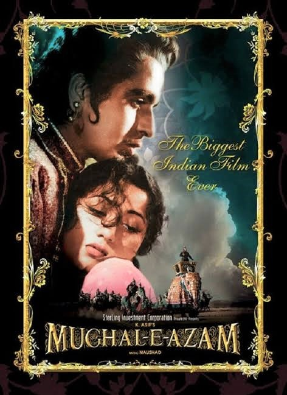

| S.NO | Movie Image | Movie Title | Movie Description | Movie Rating |
|---|---|---|---|---|
| 1. | Bahubali-The begining | In the kingdom of Mahishmati, while pursuing his love, Shivudu learns about the conflict ridden past of his family and his legacy. He must now prepare himself to face his newfound arch-enemy.. |
7.8 | |
| 2 |  |
Call me by your name | It's the summer of 1983, and precocious 17-year-old Elio Perlman is spending the days with his family at their 17th-century villa in Lombardy, Italy. He soon meets Oliver, a handsome doctoral student who's working as an intern for Elio's father. Amid the sun-drenched splendor of their surroundings, Elio and Oliver discover the heady beauty of awakening desire over the course of a summer that will alter their lives forever. |
9.5 |
| 3 |  |
Talaash | Talaash: The Answer Lies Within (transl. Search) is a 2012 Indian Hindi-language crime thriller film[1][6] written and directed by Reema Kagti, co-written by Zoya Akhtar, and produced by Ritesh Sidhwani and Farhan Akhtar under Excel Entertainment and Aamir Khan under Aamir Khan Productions, with Reliance Entertainment serving as distributor and presenter.[1] The film stars Aamir Khan, Kareena Kapoor and Rani Mukerji in lead roles, with Nawazuddin Siddiqui, Rajkummar Rao and Shernaz Patel in supporting roles.[ |
9.5 |
| 4 |  |
Saat khoon Maaf | Susanna is hungry for love and will go to any extent to find it in its purest form. In her quest for the perfect man, she gets married a number of times as each of her husband's die mysteriously. |
9.5 |
| 5 |  |
Bullet Train | Ladybug is an unlucky assassin who's determined to do his job peacefully after one too many gigs has gone off the rails. Fate, however, may have other plans as his latest mission puts him on a collision course with lethal adversaries from around the globe -- all with connected yet conflicting objectives -- on the world's fastest train. |
7.3 |
| 6 |  |
Pride and Pejudice | Pride and Prejudice follows the turbulent relationship between Elizabeth Bennet, the daughter of a country gentleman, and Fitzwilliam Darcy, a rich aristocratic landowner. They must overcome the titular sins of pride and prejudice in order to fall in love and marry. |
9 |
| 7 |  |
Kantara | A fiery young man clashes with an unflinching forest officer in a south Indian village where spirituality, fate and folklore rule the lands. |
8.3 |
| 8 |  |
KGF | Rocky, a young man, seeks power and wealth in order to fulfil a promise to his dying mother. His quest takes him to Mumbai, where he becomes involved with the notorious gold mafia. |
8.2 |
| 9 |  | Mughal-e-Azam | Mughal-e-Azam (transl. The Great Mughal) is a 1960 Indian epic historical drama film produced and directed by K. Asif. Starring Prithviraj Kapoor, Dilip Kumar, Madhubala, and Durga Khote, it follows the love affair between Mughal Prince Salim (who went on to become Emperor Jahangir) and Anarkali, a court dancer. |
8.2 |
| 10 | Saranaidu | The film was released on 22 April 2016 in Telugu. Sarrainodu was dubbed into Malayalam as Yodhavu and released in Kerala a month after the Telugu version.[3][4] It was a major commercial success at the box office and became the 2nd highest grossing Telugu film of 2016.[4] It received positive reviews from critics who praised Arjun and Aadhi's performances, action sequences, cinematography, visuals and direction, but criticized its screenplay and characters. |
9.4 |